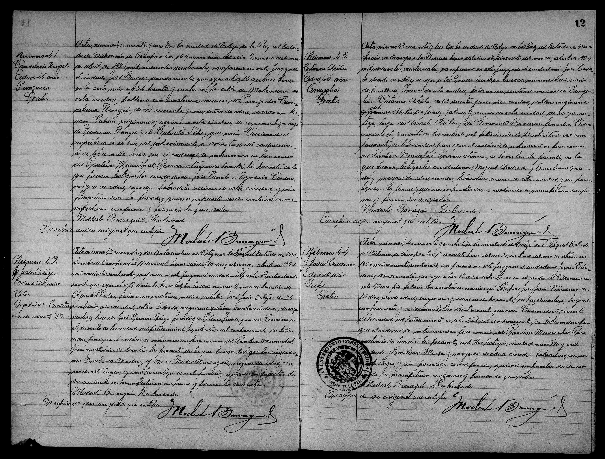

José Jesús Cárdenas

| Tipo | Acta de defunción |
| Fecha | 21 de abril de 1924 |
| Lugar | Cotija, Michoacán |
| Acta / página | Acta 44, pág. 12 |
| Difunto | José Jesús Cárdenas, varón, 10 años |
| Padres | Juan Cárdenas y Maria Dolores Bentancurt (según el índice; manuscrito: ilegible/duda) |
Transcripción pendiente de verificación: los datos provienen del índice del registro; el manuscrito no ha sido releído línea por línea. Todo texto manuscrito no verificado se marca «ilegible/duda».